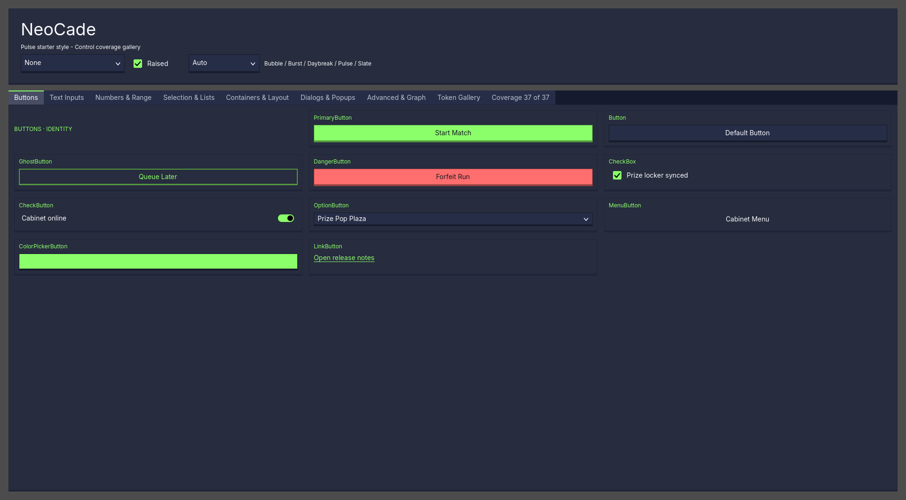
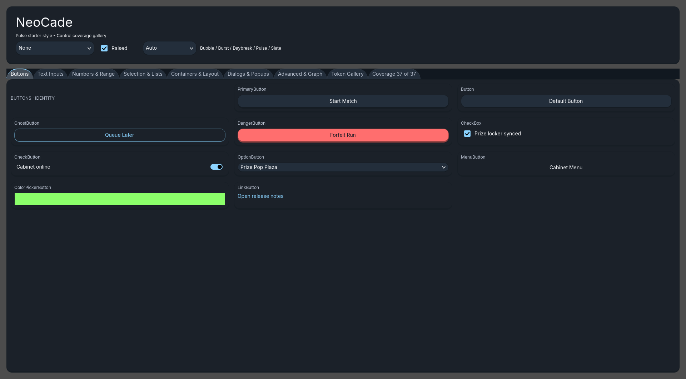
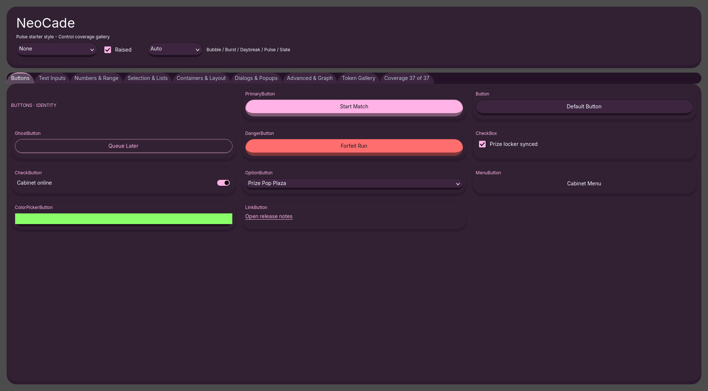
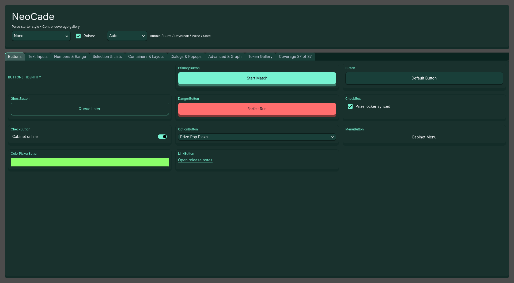
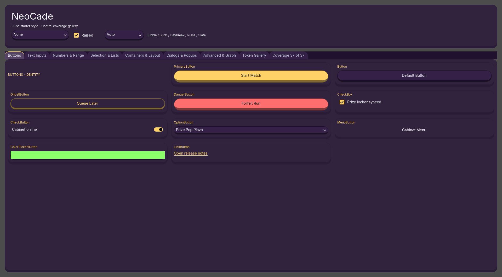

Showcase Buttons tab rendered for each of 5 directions at 1920x1080, raised=true. C6 per-direction signature moves described per row. Source: _phase12_fullsize_render_runtime.tscn.
Showcase-level "BUTTONS · IDENTITY" Kicker Label inserted above the Buttons grid + sharp rectangular chrome (corner_radius = 0).
showcase/showcase.tscn — new Kicker Label node; STYLE_PERSONALITY[Pulse].shape.{corner_radius, button_radius, primary_radius} = 0
Visible cue: kicker line + sharp boxes

1px hairline borders on interactive chrome (where the recipe carries a border_role). Other directions keep their default 2-3px borders.
STYLE_PERSONALITY[Slate].shape.hairline_thickness = 1; recipe-gated on recipe.has("border_role")
Visible cue: chrome reads quieter / thinner overall

Every resolved corner radius is floored to at least 26 (using maxi() so pre-existing larger pill radii are preserved). Produces pill silhouettes across the entire tab.
STYLE_PERSONALITY[Bubble].shape.min_radius_floor = 26; applied via maxi() in radius resolution
Visible cue: very rounded pills on every surface

Primary buttons (when raised=true) get a 1px flat accent outline at +3px offset outside their face. Primary padding also bumped to (20, 14) for chunkier feel.
STYLE_PERSONALITY[Daybreak].shape.primary_outline_width = 1, primary_outline_offset = 3, primary_outline_color = role_primary; gated on raised + strategy.ends_with(".primary_strategy")
Honest finding: outline IS applied in code (verifier confirms) but 1px mint-on-mint at low contrast is hard to perceive at this render. Open question: bump to 2px for visibility?

Primary buttons get a content_margin floor that grows them to 56px tall on desktop (64px on mobile via density scaling). Other directions sit at ~48-50px.
STYLE_PERSONALITY[Burst].shape.primary_min_height = 56; floor applied via content_margin top/bottom split
Honest finding: differential is ~6-8px which is hard to read without side-by-side comparison. Open question: bump to 64 for clearer visual delta?
